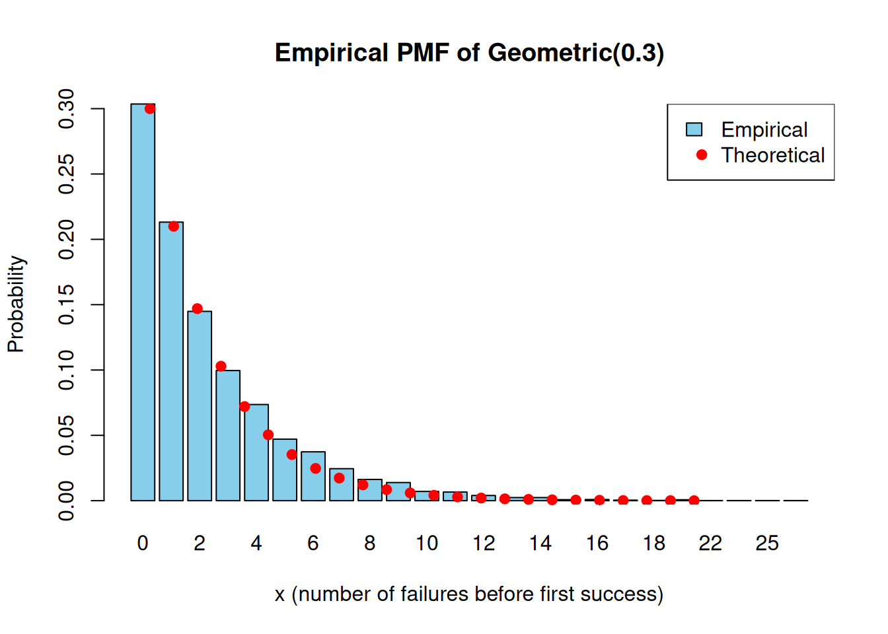
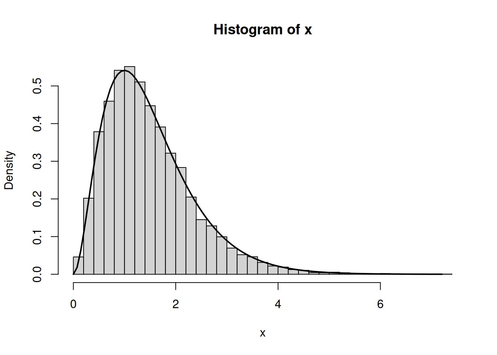
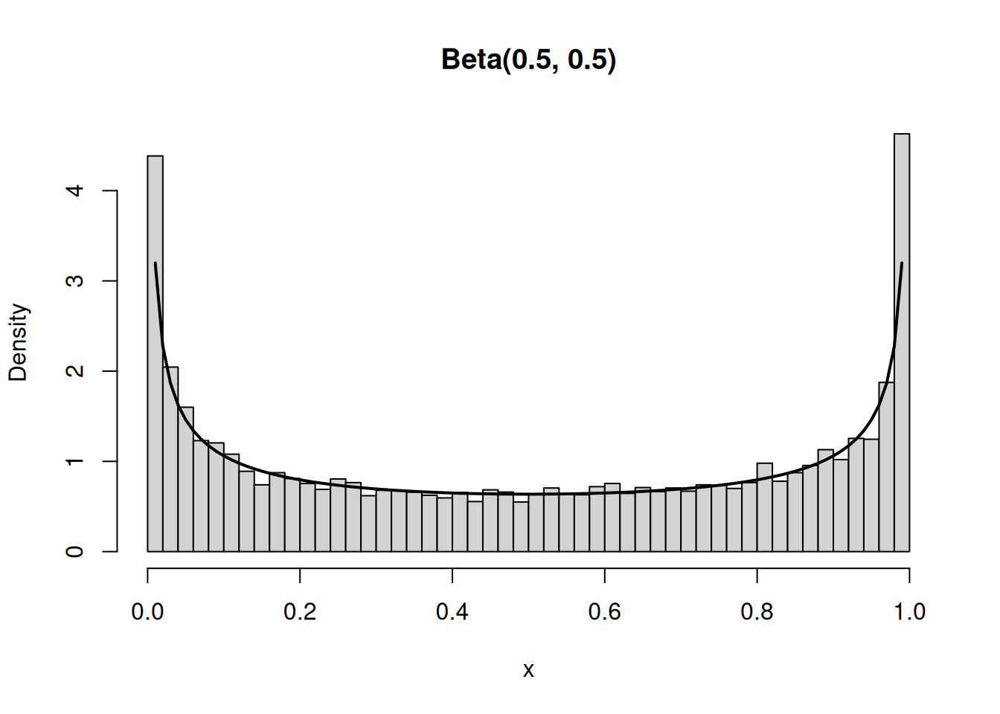

set.seed(123)
n <- 10000
p <- 0.3
x <- rgeom(n, prob = p)10 R Workshop Solutions
This workshop consists of three parts:
- Part 1: Univariate distributions in simulation
- Part 2: Joint distributions and dependence
- Part 3: Transformation of a single random variable
10.1 Part 1: Univariate distributions in simulation
Exercise 1: Geometric Distribution
Let \[X \sim \text{Geometric}(p),\] where \(p = 0.3\).
- Simulate 10,000 observations.
- Plot the empirical PMF (barplot of relative frequencies).
- Overlay the theoretical PMF.
- Compute:
- empirical mean and variance
- theoretical mean and variance
- Explain:
- Why is the geometric distribution memoryless? Verify: \(P(X>s+t | X>s)=P(X>t)\)
- How does changing \(p\) affect skewness?
- Estimate \(P(X > 5)\) analytically and via simulation. Compare results.
Solution
- Simulate 10,000 observations.
- Plot the empirical PMF (barplot of relative frequencies).
- Overlay the theoretical PMF.
# create frequency table (count how many times each value appears)
tab <- table(x)
# tab # printing the object to see what it is
emp_pmf <- tab / n # devided by n to get relative frequencies
# Plot the empirical PMF (barplot of relative frequencies).
barplot(emp_pmf,
main = "Empirical PMF of Geometric(0.3)",
xlab = "x (number of failures before first success)",
ylab = "Probability",
col = "skyblue")
# theoretical values (for observed range)
x_vals <- as.numeric(names(emp_pmf))
# names(emp_pmf) returns the values of the rv (x) in "string" format
# wrap as.numeric() convert "string" name to numbers
# theoretical PMF using the same range of x values
theo_pmf <- dgeom(x_vals, prob = p)
# overlay theoretical probabilities
# have to plot in the same code chunk
points(seq_along(x_vals),
theo_pmf,
col = "red",
pch = 19)
# legend
legend("topright",
legend = c("Empirical", "Theoretical"),
fill = c("skyblue", NA),
border = c("black", NA),
pch = c(NA, 19),
col = c("black", "red"))
Empirical PMF closely matches theoretical PMF.
- Compute:
- empirical mean and variance
- theoretical mean and variance
# Empirical mean and variance
emp_mean <- mean(x)
emp_var <- var(x)
# Theoretical mean and variance
theo_mean <- (1 - p) / p
theo_var <- (1 - p) / (p^2)
cat("Empirical mean:", emp_mean,
", Empirical variance:", emp_var)Empirical mean: 2.3 , Empirical variance: 7.554555cat("Theoretical mean:", theo_mean,
", Theoretical variance:", theo_var)Theoretical mean: 2.333333 , Theoretical variance: 7.777778- The reason empirical mean (and variance) are close to the theoretical values is due to the Law of Large Numbers (LLN).
- Variance closeness is also due to consistency (LLN applied to functions of X).
- Explain:
- Why is the geometric distribution memoryless? Verify: \(P(X>s+t | X>s)=P(X>t)\)
- How does changing \(p\) affect skewness?
Using conditional probability:
\[ P(X>s+t \mid X>s) = \frac{P(X>s+t)}{P(X>s)}, \]
and mean(x >= k) to estimate P(X>k)
# Define
s <- 3
t <- 4
# using simulated data x and conditional probability
lhs <- mean(x >= (s + t)) / mean(x >= s)
rhs <- mean(x >= t)
# use >= instead of > to compensate `rgeom` for modelling X as number of "failures"
lhs[1] 0.2382501rhs[1] 0.2387Mathematically, for a geometric distribution:
\[ P(X>k) = (1-p)^{k+1}, \]
So,
\[ \frac{P(X>s+t)}{P(X>s)} = \frac{(1-p)^{s+t+1}}{(1-p)^{s+1}} = (1-p)^t = P(X>t) \]
The cancellation is why memorylessness holds.
# Effect of changing p
set.seed(123)
n <- 10000
ps <- c(0.3, 0.5, 0.7, 0.9)
cols <- c("blue", "red", "purple", "green")
# use for loop to plot and overlay
for (i in 1:length(ps)) {
if (i == 1) { # base plot
plot(table(rgeom(n, ps[[i]])) / n,
type="b",
col = cols[[i]],
ylab = "Relative frequency",
xlab = "x")
} else { # use lines() to overlay
lines(table(rgeom(n, ps[[i]])) / n,
type="b",
col = cols[[i]])
}
}
legend("topright",
legend = paste("p =", ps),
col = c("blue", "red", "purple", "green"),
lty = 1,
pch = 1)
Increasing \(p\) makes the curve shift left and decay faster, concentrating more probability at small values (especially at 0).
- Estimate \(P(X > 5)\) analytically and via simulation. Compare results.
k <- 5
analytic_prob <- (1 - p)^(k + 1)
analytic_prob[1] 0.117649sim_prob <- mean(x > k)
sim_prob # they should be extremely close[1] 0.118We are verifying that the simulated tail probability matches the theoretical geometric survival probability \(P(X>5) = (1-p)^{5+1} = 0.117649\).
Exercise 2: Gamma Distribution
Let \[X \sim \text{Gamma}(\alpha = 3, \beta = 2)\] (Use shape–rate parameterisation.)
- Simulate 10,000 observations.
- Plot histogram with theoretical density overlay.
- Compute empirical vs theoretical mean and variance.
- Investigate how changing \(\alpha\) affects:
- skewness
- tail behaviour
Solution
- Simulate 10,000 observations.
set.seed(123)
n <- 10000
alpha <- 3
beta <- 2 # rate
x <- rgamma(n, shape = alpha, rate = beta)- Plot histogram with theoretical density overlay.
# hist(probability = TRUE) scales histogram to the total area = 1 (make it density)
hist(x, breaks = 40, probability = TRUE,
xlab = "x")
# using the same value of x that has been generated
curve(dgamma(x, shape = alpha, rate = beta),
from = 0, to = max(x),
add = TRUE, lwd = 2) # use add = TRUE to overlay
- Compute empirical vs theoretical mean and variance.
emp_mean <- mean(x)
emp_var <- var(x)
theo_mean <- alpha / beta
theo_var <- alpha / (beta^2)
emp_mean; theo_mean[1] 1.482623[1] 1.5emp_var; theo_var[1] 0.7325013[1] 0.75With large \(n\), the empirical values should be very close.
- Investigate how changing \(\alpha\) affects:
- skewness
- tail behaviour
set.seed(123)
alphas <- c(1, 2, 3, 5, 10)
cols <- c("blue", "red", "purple", "green")
beta <- 2
n <- 10000
# Create empty list to store results
samples <- vector("list", length(alphas))
for (i in 1:length(alphas)) {
a <- alphas[i] # current alpha
samples[[i]] <- rgamma(n, # simulate
shape = a,
rate = beta)
}
# Choose a common x-range so curves are comparable
xmax <- max(unlist(samples)) # find the largest observed value across all simulated datasets.
xs <- seq(0, xmax, length.out = 1000) # create a smooth grid for x-values to draw pdf
plot(xs, dgamma(xs, shape = alphas[1], rate = beta), type = "l",
xlab = "x", ylab = "Density", lwd = 2,
main = "Gamma densities for different alpha (rate fixed)")
for (i in 2:length(alphas)) {
lines(xs, dgamma(xs, shape = alphas[i], rate = beta), col = cols[[i-1]],
lwd = 2)
}
legend("topright",
legend = paste("alpha =", alphas),
col = c("black", "blue", "red", "purple", "green"),
lwd=2, lty = 1, bty = "n")
With \(\beta\) fixed, increasing \(\alpha\) has the following effects:
- Skewness decreases (more “bell-shaped”).
- Tail becomes less extreme relative to the center.
- The distribution concentrates more around its mean (and looks more normal-like), so very large values become less common relative to the bulk.
Exercise 3: Beta Distribution
Let \[X \sim \text{Beta}(2,5).\]
- Simulate 10,000 observations.
- Plot histogram and density.
- Compute mean and variance.
- Repeat for:
- Beta(0.5, 0.5)
- Beta(5, 5)
- How do the shape parameters affect:
- symmetry?
- concentration?
- boundary behaviour?
Solution
- Simulate 10,000 observations.
set.seed(123)
n <- 10000
x <- rbeta(n, shape1=2, shape2=5)- Plot histogram and density.
hist(x, breaks=30, probability=TRUE, main="")
# theoretical density
curve(dbeta(x, shape1=2, shape2=5),
from=0, to=1, add=TRUE, lwd=2, col="red")
# empirical density
lines(density(x), lwd=2, lty=2, col="blue")
legend("topright", col = c("red", "blue"),
legend = c("Theoretical density", "Empirical density"),
lty = c(1, 2), bty = "n")
- Compute mean and variance.
a <- 2
b <- 5
emp_mean <- mean(x)
emp_var <- var(x)
theo_mean <- a / (a + b)
theo_var <- (a * b) / ((a + b)^2 * (a + b + 1))
emp_mean; theo_mean[1] 0.2862241[1] 0.2857143emp_var; theo_var[1] 0.02578022[1] 0.0255102- Repeat for:
- Beta(0.5, 0.5)
- Beta(5, 5)
run_beta <- function(a, b, n = 10000, seed = 123) {
set.seed(seed)
x <- rbeta(n, a, b)
hist(x, breaks = 40, probability = TRUE,
main = paste0("Beta(", a, ", ", b, ")"),
xlab = "x", xlim = c(0, 1))
curve(dbeta(x, a, b), from = 0, to = 1, add = TRUE, lwd = 2)
emp_mean <- mean(x)
emp_var <- var(x)
theo_mean <- a / (a + b)
theo_var <- (a * b) / ((a + b)^2 * (a + b + 1))
cat("\nBeta(", a, ",", b, ")\n", sep = "")
cat("Empirical mean:", emp_mean, " Theoretical mean:", theo_mean, "\n")
cat("Empirical var :", emp_var, " Theoretical var :", theo_var, "\n")
}
run_beta(2, 5)
Beta(2,5)
Empirical mean: 0.2862241 Theoretical mean: 0.2857143
Empirical var : 0.02578022 Theoretical var : 0.0255102 run_beta(0.5, 0.5)
Beta(0.5,0.5)
Empirical mean: 0.4992115 Theoretical mean: 0.5
Empirical var : 0.1251524 Theoretical var : 0.125 run_beta(5, 5)
Beta(5,5)
Empirical mean: 0.4999191 Theoretical mean: 0.5
Empirical var : 0.0229485 Theoretical var : 0.02272727 - How do the shape parameters affect:
- symmetry?
- concentration?
- boundary behaviour?
Symmetry
The Beta distribution is symmetric if and only if \(\alpha = \beta.\)
- If \(\alpha = \beta\) → symmetric around \(0.5\).
- If \(\alpha < \beta\) → distribution is skewed toward 0.
- If \(\alpha > \beta\) → distribution is skewed toward 1.
From 4):
- \(\text{Beta}(5,5)\) → symmetric and bell-shaped.
- \(\text{Beta}(2,5)\) → skewed toward 0.
- \(\text{Beta}(0.5,0.5)\) → symmetric but U-shaped.
Concentration (Spread Around the Mean)
The variance is:
\[ \mathrm{Var}(X) = \frac{\alpha \beta}{(\alpha + \beta)^2 (\alpha + \beta + 1)}. \]
As \(\alpha + \beta\) increases:
- The variance decreases.
- The distribution becomes more concentrated around the mean.
Thus:
- Large \(\alpha + \beta\) → tightly concentrated.
- Small \(\alpha + \beta\) → more spread out.
Boundary Behaviour (Near 0 and 1)
The density near the boundaries depends on whether parameters are less than 1.
Near 0:
- If \(\alpha < 1\) → density \(\to \infty\) at 0.
- If \(\alpha = 1\) → finite nonzero value at 0.
- If \(\alpha > 1\) → density \(\to 0\) at 0.
Near 1:
- If \(\beta < 1\) → density \(\to \infty\) at 1.
- If \(\beta = 1\) → finite nonzero value at 1.
- If \(\beta > 1\) → density \(\to 0\) at 1.
Examples:
- \(\text{Beta}(0.5,0.5)\) → spikes at both 0 and 1 (U-shaped).
- \(\text{Beta}(5,5)\) → zero at both boundaries, peak at 0.5.
- \(\text{Beta}(2,5)\) → zero at boundaries, skewed toward 0.
Exercise 4: Multinomial Distribution
Let
\[(X_1, X_2, X_3) \sim \text{Multinomial}(n=20, p=(0.2,0.5,0.3))\]
- Simulate 5,000 independent multinomial experiments.
- Compute:
- sample means of each component
- covariance matrix
- Verify: \(E[X_i] = np_i\)
- Verify that components are negatively correlated.
- Visualisation
- Scatterplot of \(X_1\) vs \(X_2\)
- Comment on dependence structure.
- Conceptual Question: Why must multinomial components be dependent?
Solution
- Simulate 5,000 independent multinomial experiments.
set.seed(123)
B <- 5000
n <- 20
p <- c(0.2, 0.5, 0.3)
X <- rmultinom(B, size = n, prob = p)
# now each row of object X represents X_i
# use t() to transpose
X <- t(rmultinom(B, size = n, prob = p))
# now each "column" of object X represents X_i
# use colnames() to change columns name of object X
colnames(X) <- c("X1", "X2", "X3")- Compute:
- sample means of each component
- covariance matrix
sample_means <- colMeans(X) # return mean of each column
sample_means X1 X2 X3
3.9964 10.0404 5.9632 By LLN, sample means (empirical averages) are close to:
\[ E[X_i] = np_i \]
- \(20 \times 0.2 = 4\)
- \(20 \times 0.5 = 10\)
- \(20 \times 0.3 = 6\)
sample_cov <- cov(X) # return covariance matrix
sample_cov X1 X2 X3
X1 3.225832 -2.050065 -1.175768
X2 -2.050065 4.936155 -2.886090
X3 -1.175768 -2.886090 4.061858This returns:
\[ \begin{pmatrix} \mathrm{Var}(X_1) & \mathrm{Cov}(X_1,X_2) & \mathrm{Cov}(X_1,X_3) \\ \mathrm{Cov}(X_2,X_1) & \mathrm{Var}(X_2) & \mathrm{Cov}(X_2,X_3) \\ \mathrm{Cov}(X_3,X_1) & \mathrm{Cov}(X_3,X_2) & \mathrm{Var}(X_3) \end{pmatrix} \]
- In theory, \(Var(X_i)=np_i(1-p_i) > 0\).
- For covariance, \(Cov(X_i, X_j) = -np_ip_j \quad(i\neq j)\).
- Covariances are negative because an increase in \(X_i\) must result in a decrease in \(X_j, (i\neq j)\).
- Since the variables move in opposite directions, we have negative covariance.
- Verify: \(E[X_i] = np_i\)
theo_means <- n * p
# combine objects by columns
cbind(empirical = sample_means, theoretical = theo_means) empirical theoretical
X1 3.9964 4
X2 10.0404 10
X3 5.9632 6- Verify that components are negatively correlated.
sample_cor <- cor(X)
sample_cor # returns correlation between the columns of X X1 X2 X3
X1 1.0000000 -0.5137505 -0.3248166
X2 -0.5137505 1.0000000 -0.6445449
X3 -0.3248166 -0.6445449 1.0000000Note that:
\[ \mathrm{Corr}(X_i, X_i)=\frac{\mathrm{Cov}(X_i, X_i)} {\sqrt{\mathrm{Var}(X_i)\mathrm{Var}(X_i)}} \]
- The covariance matrix measures joint variability in original units, while the correlation matrix standardises this to measure pure strength of linear dependence on a -1 to 1 scale.
- In a correlation matrix, the diagonal entries are always 1, because a variable is perfectly positively linearly related to itself.
- Visualisation
- Scatterplot of \(X_1\) vs \(X_2\)
- Comment on dependence structure.
plot(X[, "X1"], X[, "X2"],
xlab = "X1", ylab = "X2",
main = "Scatterplot of X1 vs X2 (Multinomial, n=20)",
pch = 16)
You should see a downward trend. When \(X_1\) is large, \(X_2\) tends to be smaller (and vice versa).
Also, the points lie within feasible integer bounds, especially because:
\[ X_1+X_2+X_3=20. \]
So not every pair \((X_1,X_2)\) is possible; they’re constrained by the remaining count for \(X_3\).
- Conceptual Question: Why must multinomial components be dependent?
Because the components must sum to a fixed total:
\[ X_1+X_2+X_3=n. \]
So if one component increases, at least one of the others must decrease to keep the sum equal to \(n\). This fixed-sum constraint forces dependence and typically creates negative correlations between different categories.